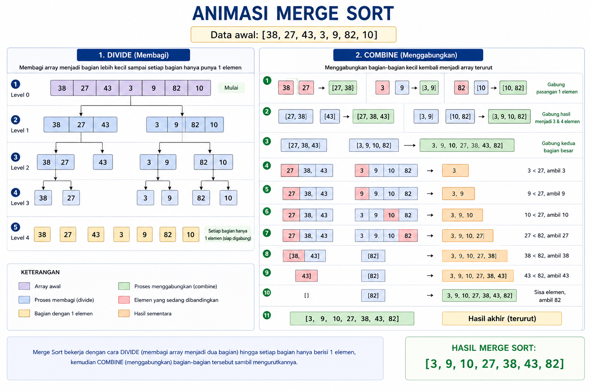
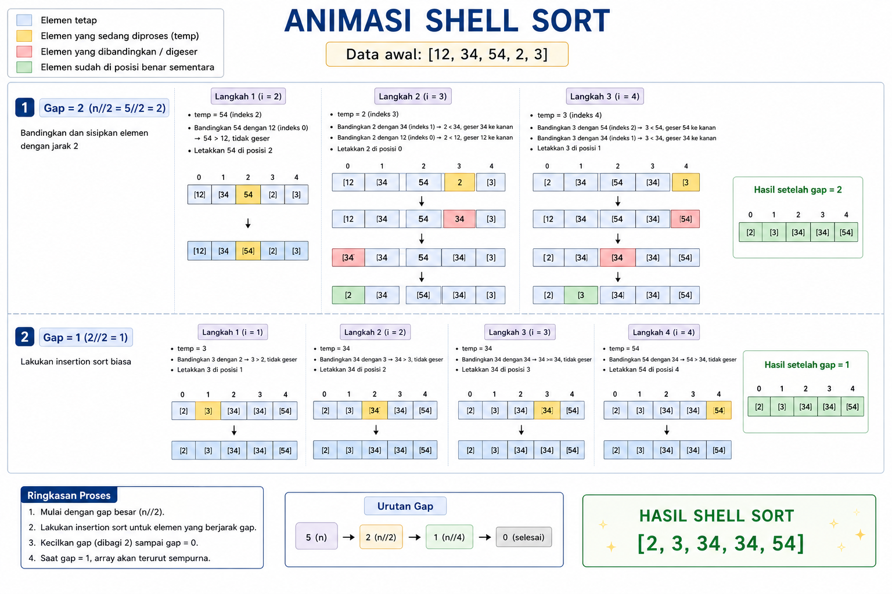

Merge Sort
Merge Sort adalah algoritma pengurutan yang menggunakan strategi Divide and Conquer (Bagi dan Taklukkan). Singkatnya, algoritma ini memecah masalah besar menjadi potongan-potongan kecil yang lebih mudah dikelola, lalu menyatukannya kembali dalam keadaan urut.
Merge Sort bekerja dengan tiga langkah utama:
<Divide (Bagi): Membagi array menjadi dua bagian secara terus-menerus sampai setiap bagian hanya berisi satu elemen. (Array dengan satu elemen dianggap sudah terurut).
Conquer (Taklukkan): Mengurutkan setiap bagian tersebut.
Combine (Gabungkan/Merge): Menggabungkan bagian-bagian kecil tadi kembali menjadi satu array yang utuh dan sudah urut.
Ilustrasi

Implementasi Python
def merge_sort(arr):
# Basis: Jika elemen cuma 1, berarti sudah urut
if len(arr) <= 1:
return arr
# 1. DIVIDE: Cari titik tengah dan bagi dua
mid = len(arr) // 2
kiri = arr[:mid]
kanan = arr[mid:]
# Rekursi untuk membagi terus sampai habis
kiri = merge_sort(kiri)
kanan = merge_sort(kanan)
# 2. COMBINE: Gabungkan kembali bagian kiri dan kanan
return merge(kiri, kanan)
def merge(kiri, kanan):
hasil = []
i = j = 0
# Bandingkan elemen dari kedua bagian
while i < len(kiri) and j < len(kanan):
if kiri[i] < kanan[j]:
hasil.append(kiri[i])
i += 1
else:
hasil.append(kanan[j])
j += 1
# Jika ada sisa elemen yang belum dimasukkan
hasil.extend(kiri[i:])
hasil.extend(kanan[j:])
return hasil
# Uji coba
data = [38, 27, 43, 3, 9, 82, 10]
data_urut = merge_sort(data)
print("Hasil Merge Sort:", data_urut)
Penjelasan Kode:
A. Fungsi merge_sort (Pembagian) Rekursi: Fungsi ini memanggil dirinya sendiri. Ia terus membelah array menjadi kiri dan kanan sampai ukurannya jadi 1 elemen saja. Base Case: if len(arr) <= 1 adalah remnya. Tanpa ini, kode akan berjalan selamanya (error).
B. Fungsi merge (Penggabungan - Bagian Terpenting) Di sinilah pengurutan sebenarnya terjadi. Bayangkan kamu punya dua tumpuk kartu yang masing-masing sudah urut: Kita bandingkan kartu paling atas di tumpukan kiri dan kanan. Siapa yang lebih kecil, dia masuk duluan ke tumpukan hasil. extend: Jika salah satu tumpukan sudah habis, sisa kartu di tumpukan lainnya langsung ditempelkan di paling belakang karena mereka pasti sudah urut.
Sell Sort
Jika pada Insertion Sort kita hanya membandingkan elemen yang bersebelahan (jarak 1), di Shell Sort kita membandingkan elemen dengan jarak (gap) tertentu. Jarak ini perlahan-lahan akan mengecil sampai akhirnya menjadi 1.
Ilustrasi

Implementasi Python
def shell_sort(arr):
n = len(arr)
gap = n // 2 # Mulai dengan gap besar
# Terus kurangi gap sampai gap = 0
while gap > 0:
for i in range(gap, n):
temp = arr[i]
j = i
# Lakukan insertion sort untuk elemen dengan jarak 'gap'
while j >= gap and arr[j - gap] > temp:
arr[j] = arr[j - gap]
j -= gap
arr[j] = temp
gap //= 2 # Perkecil gap (dibagi dua)
# Uji coba
data = [12, 34, 54, 2, 3]
shell_sort(data)
print("Hasil Shell Sort:", data)
Penjelasan Kode:
gap = n // 2: Ini menentukan jarak awal. Jika data ada 10, kita bandingkan angka yang berjarak 5 posisi.
<while j >= gap and arr[j - gap] > temp: Ini mirip sekali dengan while di Insertion Sort. Bedanya, kalau di Insertion Sort kita pakainya j - 1, di sini kita pakai j - gap.
gap //= 2: Setiap putaran besar selesai, jaraknya makin rapat. 5 → 2 → 1.